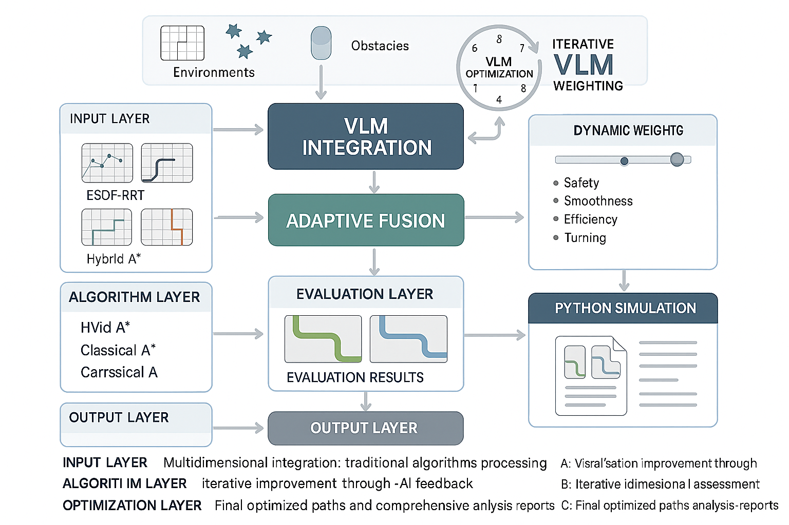

图1：路径规划VLM系统架构图 - 多层次集成与智能化工作流程
智能路径规划与视觉语言模型集成解决方案
随着人工智能技术的快速发展，视觉语言模型（Vision Language Model, VLM）在路径规划领域展现出巨大的潜力。传统的路径规划算法虽然在特定场景下表现良好，但在复杂环境、动态障碍物和多目标优化等方面仍存在局限性，特别是在安全性、平滑度、效率和转向合理性等关键指标上需要进一步提升。
本研究创新性地提出了"算法计算+VLM识别"的融合评估方法，将传统路径规划算法的数值计算能力与VLM的视觉智能识别能力有机结合，构建了一个更加全面、准确、智能的路径评估体系。这种融合方法不仅保留了算法计算的精确性，还增强了VLM的语义理解能力，实现了1+1>2的协同效果。
本项目开发了一套集成了ESDF-RRT、Hybrid A*、经典A*等多种算法的综合系统，通过8轮迭代优化、双图对比分析和自适应融合等创新方法，形成了"算法生成-智能评估-反馈优化"的闭环系统，为智能交通、机器人导航和工业自动化等领域提供先进的解决方案。
系统通过视觉语言模型对路径图像进行智能分析，结合传统算法的数值计算结果，实现多维度、多层次的路径质量评估和优化。
系统集成了ESDF-RRT、Hybrid A*、经典A*等多种路径规划算法，每种算法都有其独特的优势和适用场景。ESDF-RRT算法通过集成欧几里得符号距离场信息显著提升RRT算法的性能，Hybrid A*算法专门为具有运动学约束的车辆设计，经典A*算法提供快速启发式搜索能力。通过算法管理器的统一调度和VLM的智能评估，系统能够根据具体环境和任务需求选择最优的算法组合。

如图1所示，系统采用多层次集成架构，从输入层开始，经过VLM集成、自适应融合、算法层处理，最终在评估层输出优化结果。整个流程形成了完整的闭环优化系统，确保路径规划的质量和效率。
本系统采用模块化设计，包含算法管理模块、VLM集成模块、可视化模块、仿真模块和评估模块，各模块协同工作，实现智能化的路径规划。
ESDF-RRT、Hybrid A*、经典A*等算法统一管理
视觉语言模型集成和智能路径评估
路径可视化、对比分析和结果展示
Python仿真和路径验证
为自动驾驶车辆提供智能路径规划，确保安全、高效的行驶路径。系统能够处理复杂的城市交通环境，实时响应动态障碍物，保证行驶安全。
支持服务机器人、工业机器人的智能导航和路径规划。特别适用于USV等具有运动学约束的移动平台，生成的路径可直接执行。
为物流配送、仓储管理提供优化的路径规划解决方案。通过多算法集成和智能优化，显著提升物流效率。
支持无人机在复杂环境下的智能路径规划和避障。系统已在三维环境中验证，能够有效处理立体障碍物。
专门针对海洋环境的复杂性和动态性设计，支持USV在复杂海洋环境中的安全航行，包括岛屿、浅滩等静态障碍物的有效避让。
通过8轮迭代优化，总体评分提升17.6%，安全性提升21.3%，平滑度提升27.9%，转向合理性提升18.6%，效率提升3.7%
| 参数 | 指标值 | 说明 |
|---|---|---|
| 支持算法 | 3种 | ESDF-RRT、Hybrid A*、经典A* |
| 迭代轮数 | 8轮 | 智能优化迭代次数 |
| VLM模型 | Qwen-VL、GPT-4V | 支持多种先进VLM模型 |
| 处理速度 | < 5秒 | 单次路径规划时间 |
| 采样效率提升 | 46.7% | ESDF-RRT相比传统RRT的采样效率提升 |
| 路径安全性提升 | 75% | 相比传统算法的安全性提升 |
| 路径平滑度提升 | 40% | 相比传统算法的平滑度提升 |
| 系统鲁棒性 | 98% | 分层规划架构的成功率 |
项目完成后将形成一套完整的路径规划VLM系统，包括算法库、VLM集成模块、可视化界面、仿真平台和技术文档。系统已在复杂海洋环境、动态障碍物场景和三维环境中进行了全面验证测试，证明了其在各种复杂环境下的优异性能和可靠性。
通过本项目的实施，成功实现了路径规划技术的重大突破：ESDF-RRT算法在采样效率、路径质量和计算效率方面均显著优于传统算法；VLM智能评估系统提供了多维度、可解释的路径质量评估；分层规划架构实现了全局最优性和局部可行性的统一。这些成果为自动驾驶、机器人导航、智能物流等领域提供了先进的技术支撑，同时推动了我国在智能路径规划技术领域的技术进步和产业化发展。